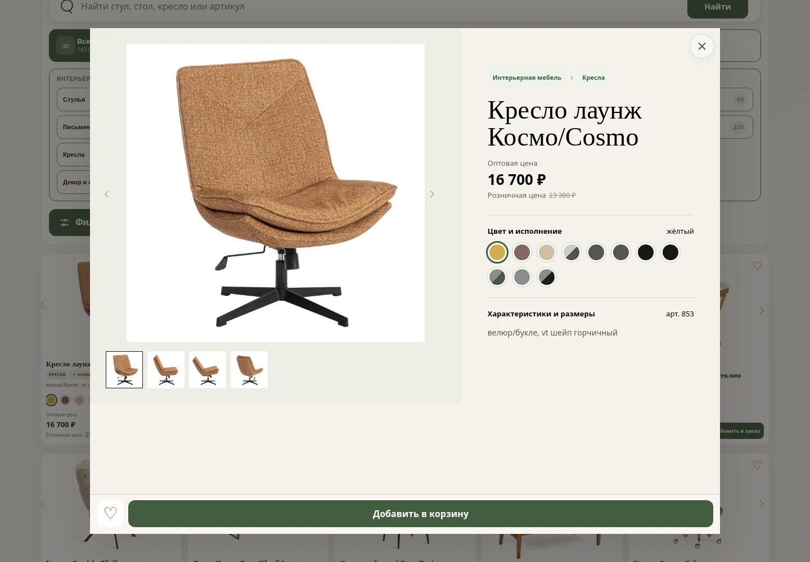
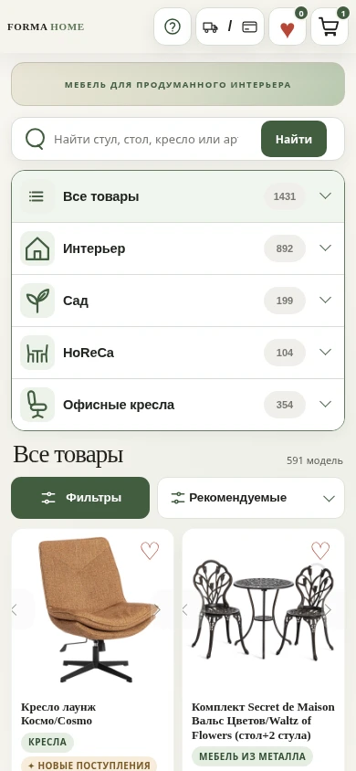
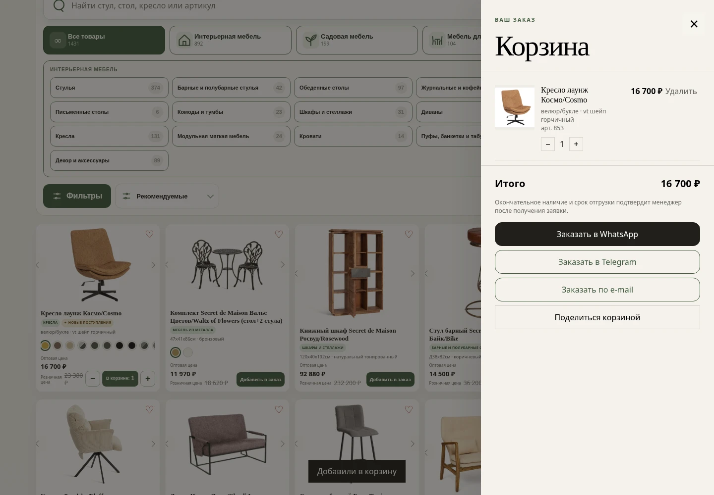

TETOpt · Data & catalog website
From a spreadsheet
to a working catalog.
Built without a dedicated development budget: structured product data, search, filters, and inquiry preparation in one interface.

- Brief
- Make an assortment searchable and easy to choose from.
- Contribution
- Data structure, catalog logic, and responsive interface.
- Context
- Static website. Orders are prepared as inquiries to a manager.
Start by organizing the data
Product data forms the interface: categories, article numbers, specifications, images, and variants need to stay connected. Each variant retains its own data, so the catalog does not promise combinations that do not exist.
This allows one structure to support the product list, detail view, and inquiry for selected items.

Find, compare, save
The current implementation includes search by name and article number, categories and subcategories, price filtering, sorting, and paginated results. A detailed view helps users inspect the product before making an inquiry.
Favorites and the cart persist in the browser. On mobile, filters open separately from the list to keep products in focus.
Open the actual catalog
Turn a selection into an inquiry
The cart turns selected products and quantities into an order text for a manager. Users can continue in WhatsApp, Telegram, or email and choose when to send.
This prepares an inquiry; it is not server-side checkout or payment processing. The case makes no sales or conversion claims.

A catalog that supports a task
Users can search the assortment, narrow it down, save items, and collect them into an inquiry. The result is a working user flow that can be reviewed in the public project.
Contact
Let’s discuss your project.
Tell us about your product, timeline, and the result you need. We will start with the brief and agree on the right scope.